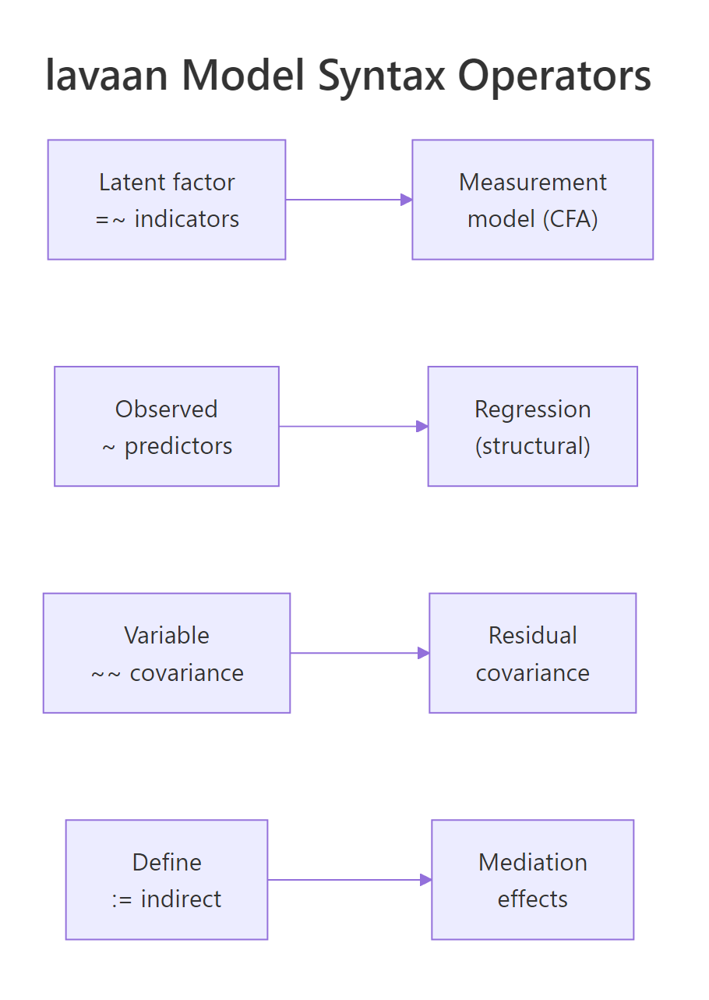
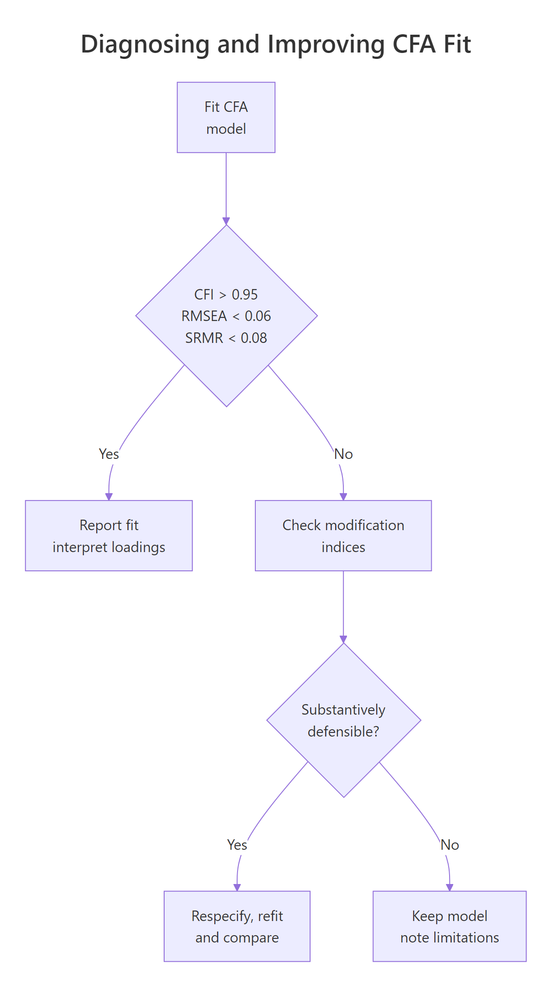
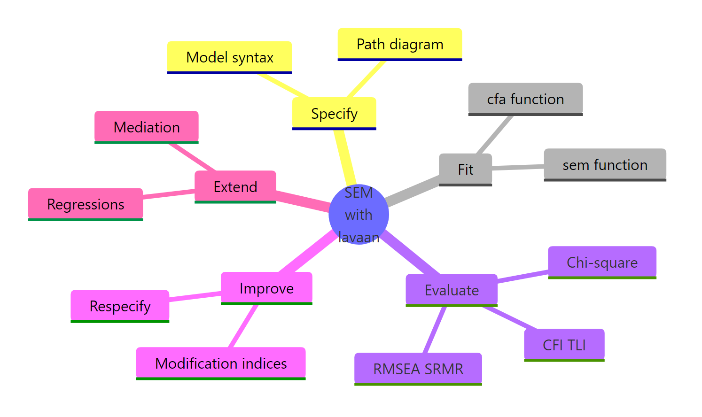

SEM and CFA in R With lavaan: From Path Diagram to Fit Statistics
Confirmatory factor analysis (CFA) tests whether a hypothesised set of latent factors actually reproduces the covariance structure you observe in the data. Structural equation modeling (SEM) goes further: it lets those latent factors predict one another inside a single model. The lavaan package in R translates both kinds of path diagram directly into code. This post walks the full workflow, from writing model syntax to reading fit indices to respecifying a model that misfits, all runnable in your browser.
How does a CFA model translate a theory into a fit statistic?
Theory says the nine ability tests in the classic HolzingerSwineford1939 dataset measure three latent abilities: visual, textual, and speed. CFA asks whether that three-factor story reproduces the observed covariance among the nine tests. If the covariance implied by the model matches the observed one, the model fits. Let's fit it now and read the first fit indices CFA reports.
The block below loads lavaan, writes a three-factor model in lavaan syntax, fits it with cfa(), and prints a summary that includes the main fit indices. The =~ operator reads "is measured by": one latent factor on the left, its observed indicators on the right.
The chi-square test rejects exact fit (p < .001), which is common at N = 301. More useful, CFI is 0.931, RMSEA is 0.092, and SRMR is 0.065. CFI sits below the conventional 0.95 threshold and RMSEA exceeds 0.06, so the three-factor story is close but not clean. We will come back and fix that later. For now notice the Std.all column: the first visual indicator x1 has a standardised loading of 0.77, meaning 0.77 of its standard deviation is explained by the visual factor.
Try it: Print the first six rows of HolzingerSwineford1939 so you can see the raw test scores the model is explaining. The data is already loaded because lavaan ships it.
Click to reveal solution
Explanation: head() defaults to six rows, showing that each row is one student and columns x1 through x9 are the nine ability test scores the factor model explains.
How does lavaan's model syntax map to a path diagram?
A path diagram is the visual language of SEM. Boxes are observed variables, circles are latent variables, single-headed arrows are regressions, and double-headed arrows are covariances. lavaan's model syntax is a one-to-one translation of that diagram into text. Every arrow in the diagram becomes a line in the model string.

Figure 1: Each lavaan operator corresponds to one kind of arrow in a path diagram.
Four operators cover almost everything you will write. =~ defines a measurement model, reading latent on the left, indicators on the right. ~ defines a regression, outcome on the left, predictors on the right. ~~ defines a covariance or residual covariance. := defines a new parameter from existing ones, useful for indirect effects. Let's re-use fit_hs and pull its parameter estimates in a tidy data-frame form to see the operators at work.
Rows 1, 4, and 7 show the classic lavaan convention: the first indicator of each factor is fixed to 1 so the latent factor has a defined scale. All other loadings are free parameters. std.lv standardises only the latent variable, std.all standardises both latent and observed. When you report standardised loadings, std.all is usually what readers expect.
std.lv = TRUE to the cfa() call. Either choice gives identical fit, just different parameterisations.Try it: Re-fit HS_model with std.lv = TRUE, save the fit to ex_fit_stdlv, and print the first loading for visual =~ x1. It should now be free instead of fixed to 1.
Click to reveal solution
Explanation: With std.lv = TRUE, lavaan fixes the variance of visual to 1 instead of fixing the x1 loading to 1. The loading becomes a free parameter with value 0.900, which is also the value std.lv showed you earlier.
Which fit indices should you trust, and what do the cutoffs mean?
lavaan reports dozens of fit indices. Four of them drive almost every CFA paper: the chi-square test, CFI, RMSEA, and SRMR. Each measures a different aspect of fit. The chi-square test is the only formal significance test and nearly always rejects at large N, so practitioners rely on incremental and absolute indices to judge whether the model is close enough to the data to be useful.
CFI (Comparative Fit Index) and TLI (Tucker-Lewis Index) compare your model to a null model where no variables correlate. Higher is better, with 0.95 the conventional "good fit" bar. RMSEA (Root Mean Square Error of Approximation) is an absolute index that penalises complexity. It estimates population misfit per degree of freedom. Smaller is better, with 0.06 the conventional threshold. SRMR (Standardised Root Mean square Residual) is the average standardised residual covariance, target below 0.08.
RMSEA has a simple formula once you see it:
$$\text{RMSEA} = \sqrt{ \max\left(\frac{\chi^2 - df}{df \cdot (N-1)},\ 0\right) }$$
Where:
- $\chi^2$ = model chi-square
- $df$ = degrees of freedom
- $N$ = sample size
The numerator $\chi^2 - df$ represents misfit beyond what you would expect by chance. Dividing by $df \cdot (N-1)$ standardises that misfit per parameter per person. A value of 0 means the model fits the data perfectly.
If you're not interested in the formula, skip to the code, you only need the interpretation.
Three signals point the same way. CFI of 0.931 is short of 0.95. RMSEA of 0.092 with a lower 90% CI bound of 0.071 is well above 0.06, and the confidence interval does not even touch the "good fit" region. SRMR of 0.065 is fine. Two of the three headline indices suggest the three-factor model needs work. The chi-square test adds formal rejection on top. This is the pattern that sends you to modification indices.
Try it: Extract just cfi and rmsea from fitMeasures(fit_hs) and print them side by side as a named numeric vector.
Click to reveal solution
Explanation: fitMeasures() accepts a character vector of index names. Passing c("cfi", "rmsea") returns exactly those two, in the order you asked for.
How do you diagnose and improve poor model fit?
When a CFA misfits, the data is telling you the model is missing a constraint that actually holds in the population. The diagnosis tool is the modification index (MI). For every parameter that is currently fixed, lavaan estimates how much the model chi-square would drop if that parameter were freed. Large MIs point to locations where the model is too restrictive. Small MIs are noise.

Figure 2: Deciding whether to respecify a CFA after reading the fit indices.
The right workflow is: sort MIs, pick the largest, ask whether freeing that parameter is theoretically defensible, refit, and compare. Freeing parameters to chase fit without theory is the most common abuse of SEM and produces models that do not replicate.
Two rows dominate. A cross-loading from visual to x9 (MI = 36.4) and a residual covariance between x7 and x9 (MI = 34.1). The HS1939 literature has long noted that x7 and x9 share a speeded-counting mechanism beyond the speed factor, so a residual covariance between them is a defensible substantive addition. Adding it matches a known finding rather than chasing fit. Let's add that one parameter and compare the two models.
The chi-square difference of 33.76 on 1 df is highly significant, so fit_hs2 fits better than fit_hs by a wide margin. CFI jumps from 0.93 to 0.97, RMSEA drops from 0.09 to 0.06, and SRMR tightens from 0.065 to 0.050. All three indices now sit inside the conventional "good fit" zone. Because the change is grounded in a substantive story about timed counting, this is a defensible respecification rather than fit chasing.
Try it: From the full modificationIndices(fit_hs) output, locate the single row with the largest mi and print its lhs, op, rhs, and mi columns.
Click to reveal solution
Explanation: sort = TRUE puts the largest MI first, so row 1 is the global maximum. Subsetting columns keeps the output readable.
How do you extend CFA to a full structural equation model?
CFA only defines a measurement model: latent factors and their indicators. A full SEM adds a structural model on top, letting latent factors regress on one another. The measurement model stays identical in syntax, you just add regression lines with ~ between latents. Use sem() instead of cfa(). Under the hood they are thin wrappers around the same engine, with slightly different defaults.
Bollen's PoliticalDemocracy data is the classic SEM teaching example and ships with lavaan. Three latent factors: industrialisation in 1960 (ind60), political democracy in 1960 (dem60), and political democracy in 1965 (dem65). The structural claim is that industrialisation predicts democracy, and that 1960 democracy predicts 1965 democracy.
Fit is acceptable on CFI and SRMR and borderline on RMSEA. That is typical of the Bollen data because sample size is only 75 and the model is not saturated. The more interesting output for SEM is the structural-part estimates, particularly the regression paths between latents. That is where the theory lives.
cfa() and sem() functions are nearly identical wrappers around lavaan(). In practice the main difference is that sem() leaves certain exogenous covariance defaults active. For standard CFA you can use either. When in doubt, use the one that matches your intent.Reading the standardised column est.std: a one standard-deviation change in ind60 raises dem60 by 0.45 SD. dem65 is mostly explained by its own 1960 value (standardised 0.89) with a small residual effect of ind60 (0.15). That is a textbook autoregressive-plus-cross-lagged pattern, and it only falls out because the measurement error in each latent has been partialled out, something path analysis on observed sums cannot do.
Try it: Extract just the standardised dem65 ~ dem60 coefficient from standardizedSolution(fit_pd) and store it in ex_beta_d65_d60.
Click to reveal solution
Explanation: standardizedSolution() returns a data frame where each row is one parameter. Logical subsetting on lhs, op, and rhs isolates the one regression path you want.
Practice Exercises
These combine several pieces from the tutorial. Use distinct variable names (prefixed my_) so you don't overwrite the notebook state.
Exercise 1: A one-factor versus three-factor comparison
Using HolzingerSwineford1939, fit a one-factor model where all nine indicators load on a single general ability factor g. Compute CFI and RMSEA. Compare the one-factor model with the original three-factor fit_hs via anova(). Save the better-fitting model to my_best_hs.
Click to reveal solution
Explanation: CFI of 0.65 and RMSEA of 0.18 for the one-factor model are catastrophic. The chi-square difference of 133.5 on 3 df confirms fit_hs fits far better, so the three-factor structure is the clear winner.
Exercise 2: Constrained-loading SEM
In the PoliticalDemocracy SEM, constrain the measurement of dem65 to equal that of dem60 (parallel measurement over time). Use the a*y1 + b*y2 + c*y3 + d*y4 label syntax on dem60 and the same a*, b*, c*, d* labels on dem65 =~ a*y5 + b*y6 + c*y7 + d*y8. Fit with sem(), save to my_pd_constr, and compare with the unconstrained fit_pd via anova().
Click to reveal solution
Explanation: The chi-square difference is 1.83 on 3 df, p = 0.61, so imposing equal loadings across waves does not significantly worsen fit. The measurement structure is invariant over the five-year gap, supporting longitudinal comparison of dem60 and dem65.
Exercise 3: Indirect effect of industrialisation
Compute the standardised indirect effect of ind60 on dem65 through dem60 in the PoliticalDemocracy SEM. In lavaan, define a := dem60~ind60 path, b := dem65~dem60 path, and indirect := a*b inside the model string. Fit and store the indirect row in my_indirect.
Click to reveal solution
Explanation: The indirect effect is a*b, the product of the ind60 -> dem60 path and the dem60 -> dem65 path. A significant indirect effect of 0.55 means industrialisation in 1960 raises 1965 democracy mostly by first raising 1960 democracy.
Complete Example: Putting It All Together
Full workflow on the Bollen PoliticalDemocracy data. Specify the measurement and structural parts, fit, inspect fit indices, read modification indices, respecify a defensible residual covariance, then report the final standardised solution.
Adding the substantively motivated residual covariances brings every fit index into the "good" zone: CFI 0.995, RMSEA 0.035, SRMR 0.044. The standardised structural paths barely move from the simpler run, which is the outcome you want: good measurement adjustments should refine the estimates, not rewrite them.
Summary

Figure 3: The five stages of a lavaan SEM workflow.
| Concept | What to remember |
|---|---|
=~ |
Latent factor =~ indicators (measurement model) |
~ |
Outcome ~ predictors (regression, structural part) |
~~ |
Variable ~~ variable (covariance or residual covariance) |
:= |
Named parameter combinations (indirect effects) |
| CFI, TLI | Incremental fit vs null model, aim > 0.95 |
| RMSEA | Absolute fit per df, aim < 0.06 |
| SRMR | Mean standardised residual, aim < 0.08 |
| Modification index | Hint, not verdict. Respecify only with theory support. |
cfa() vs sem() |
Same engine, different defaults. sem() for models with latent-to-latent regressions. |
References
- Rosseel, Y. (2012). lavaan: An R Package for Structural Equation Modeling. Journal of Statistical Software, 48(2). Link
- Official lavaan tutorial. Link
- Kline, R. B. (2015). Principles and Practice of Structural Equation Modeling (4th ed.). Guilford Press.
- UCLA OARC. Confirmatory Factor Analysis (CFA) in R with lavaan. Link
- Hu, L.-T., & Bentler, P. M. (1999). Cutoff criteria for fit indexes in covariance structure analysis. Structural Equation Modeling, 6(1). Link
- Bollen, K. A. (1989). Structural Equations with Latent Variables. Wiley.
- lavaan CRAN reference manual. Link
- Chen, F. F. (2007). Sensitivity of goodness of fit indexes to lack of measurement invariance. Structural Equation Modeling, 14(3). Link
Continue Learning
- Exploratory Factor Analysis in R, the data-driven sibling of CFA, finding factors rather than testing them.
- PCA in R, dimension reduction without a latent-variable model.
- Multivariate Statistics in R, Mahalanobis distance and Hotelling's T-squared for multivariate location tests.